실내 벽 계약 — 주택 통타일 / 다크 366 / 쿼터 소스
Option B (2026-07-15) 적용 완료.
이 문서는 아카이브가 아니라 현재 코드의 계약서입니다.
모든 이미지는 scripts/render-interior-wall-contract-cases.mts가
실제 상수·planInteriorHouseWalls·interiorDarkWallQuarterComposition을
호출해 생성합니다. 손으로 조립한 픽셀은 없습니다.
366 하나)
렌더 전용 쿼터 소스
금지
한 줄 결론
예전 문제는 “오토타일 개념”이 아니라 같은 숫자 ID를 세 가지 저장 의미로 동시에 해석한 것이었습니다. 이제 계약은 한 방향입니다.
- A. 주택 셸 = 통타일 writer —
planInteriorHouseWalls가 완성 타일을lowerTiles에 직접 기록. 저장 오토타일 없음. - B. 어두운 벽 =
366저장 — 모든 다크 벽 셀은366하나로만 저장. - C. 다크 쿼터 소스 = 렌더 전용 —
368/396–458은 아틀라스 좌표일 뿐, 저장 멤버·variant 출력이 아님.
397은 이제 충돌이 아닙니다. 주택은 397을 완성 문턱/남측 트림으로 저장하고,
다크는 366을 저장한 뒤 렌더에서만 397의 위쪽 선 쿼터를 샘플링합니다.
저장 계층과 렌더 계층이 분리됐기 때문에 같은 픽셀을 공유해도 복원이 모호하지 않습니다.
0. 계약표
| 경로 | 저장(lowerTiles) | 렌더 |
|---|---|---|
주택 셸 (villager-room-v1 walls) |
완성 통타일: 크림 74–76/104–106, 1칸 77/107,
캡 457, 캡 조인트 458/456, 포스트 428/426,
남측 트림·문턱 397, 문 플랭크 398|floor|396 |
plain 통타일 — 이 ID들이 중심이면 쿼터 합성 안 함 |
| 어두운 벽 | 모든 셀 366 |
interiorDarkWallQuarterComposition이 427 underlay + 네 쿼터를
368/396–458에서 샘플링 |
| 새 주택 결과 금지 | 233, 257, 258 |
— |
1. 픽셀 방향 — 이름이 아니라 선을 믿는다
원본 3×4 소스 블록 (변경 없음)
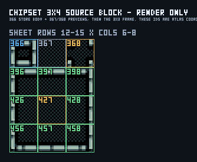
3×3 쿼터 소스 — 실제 선 방향 기준표
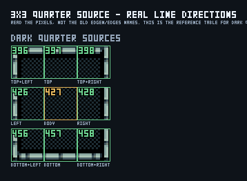
| ID | 실제 보이는 선 | 주택 배치 역할 (저장) | 다크 쿼터 역할 (렌더 소스) |
|---|---|---|---|
396 | 위 + 왼쪽 | 남동 외곽 코너 / 문 동 플랭크 | 위+왼쪽 볼록 코너 |
397 | 위 | 남측 트림 / 문턱 | 위쪽 변 |
398 | 위 + 오른쪽 | 남서 외곽 코너 / 문 서 플랭크 | 위+오른쪽 볼록 코너 |
426 | 왼쪽 | 동쪽 포스트 (선이 방 안쪽) | 왼쪽 변 |
427 | 없음 — 어두운 몸통 | 저장 안 함 | 중앙 몸통 / underlay |
428 | 오른쪽 | 서쪽 포스트 (선이 방 안쪽) | 오른쪽 변 |
456 | 아래 + 왼쪽 | 북동 캡 조인트 | 아래+왼쪽 볼록 코너 |
457 | 아래 | 북쪽 캡 직선 | 아래쪽 변 |
458 | 아래 + 오른쪽 | 북서 캡 조인트 | 아래+오른쪽 볼록 코너 |
368 | 오목 코너 조각 | 저장 안 함 | 오목 코너 |
366 | 고립 프리뷰 | 주택 아님 | 다크의 유일한 저장 ID · 렌더 중심 게이트 |
edgeN=457, edgeS=397, edgeW=428, edgeE=426)은
픽셀 방향과 반대였습니다. 새 이름은 전부 배치 역할 또는 선 방향이며,
“결손 방향”을 이름에 섞지 않습니다.
2. 역할 카드 — 저장 vs 렌더 소스
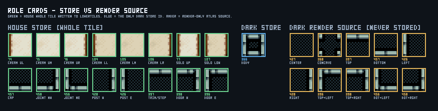
// src/project/defaults/interiorHouseWallTiles.ts (주택 저장 정본)
HOUSE_SHELL_TILE = {
creamUpperL: 74, creamUpperM: 75, creamUpperR: 76,
creamLowerL: 104, creamLowerM: 105, creamLowerR: 106,
soloUpper: 77, soloLower: 107,
capStraight: 457, capJointNW: 458, capJointNE: 456,
postWest: 428, postEast: 426,
southTrim: 397, southWestCorner: 398, southEastCorner: 396,
void: 430, floor: 72,
}
HOUSE_SHELL_FORBIDDEN_TILES = [233, 257, 258]
// src/project/defaults/darkWallAutotile.ts (다크 정본)
DARK_WALL_TILE = { BODY: 366 } // 유일한 저장 ID
DARK_WALL_QUARTER_SOURCE = { // 렌더 전용 아틀라스 좌표
center: 427, concave: 368,
edgeN: 397, edgeS: 457, edgeW: 426, edgeE: 428,
cornerNW: 396, cornerNE: 398, cornerSW: 456, cornerSE: 458,
}
3. 금지 타일 — 원본 픽셀이 계약과 다르다
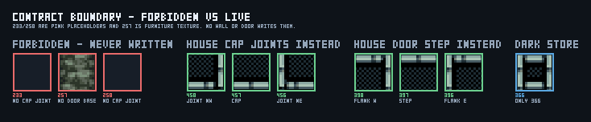
458/456을 씁니다.257 은 문 기둥 받침 프레임이 아니라 어두운 녹회색 가구 질감입니다. 문턱은
397 하나만 쓰고 좌우 받침을 쓰지 않습니다 — 주변은 실제 공허 430으로 남습니다.
4. 주택 셸 — 통타일 writer
단일 사각 방 — planInteriorHouseWalls 출력 전체
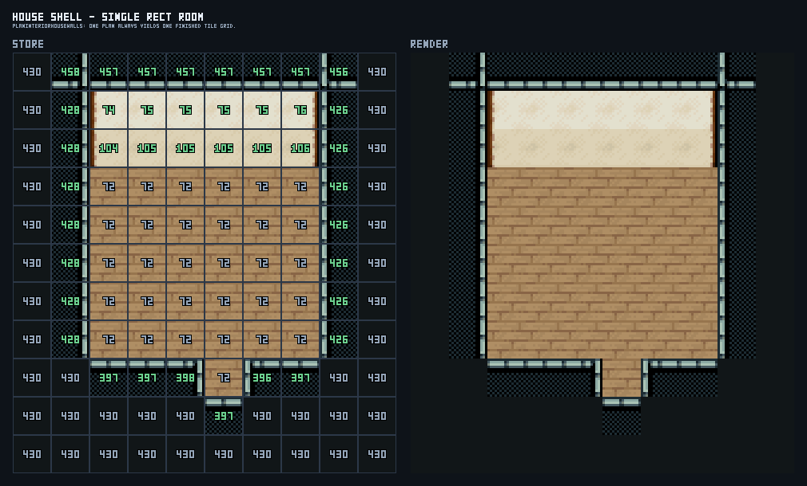
왼쪽이 저장 grid(각 셀에 실제 lowerTiles 값), 오른쪽이 최종 렌더입니다.
캡 458 · 457… · 456 → 크림 74/75/76 → 104/105/106 → 바닥,
좌우 포스트 428/426, 남측 397 트림에 398 | 72 | 396 문과 397 계단.
233/258/257 없음. 남쪽 대각 코너는 실제 공허 430입니다.
북벽 2단 + 457 캡
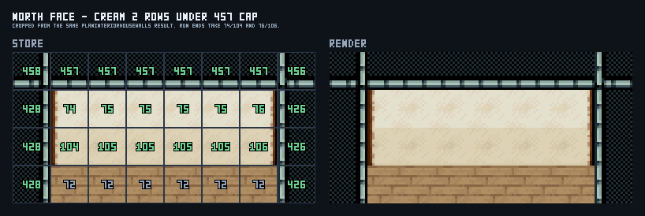
가로 run 양 끝만 74/104·76/106, 가운데는 75/105.
남문 알코브 — 398 | 72 | 396 + 397
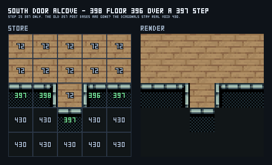
계단은 397 하나. 구 257 받침은 삭제됐습니다.
캡·포스트·코너 링 (핑크 없음)
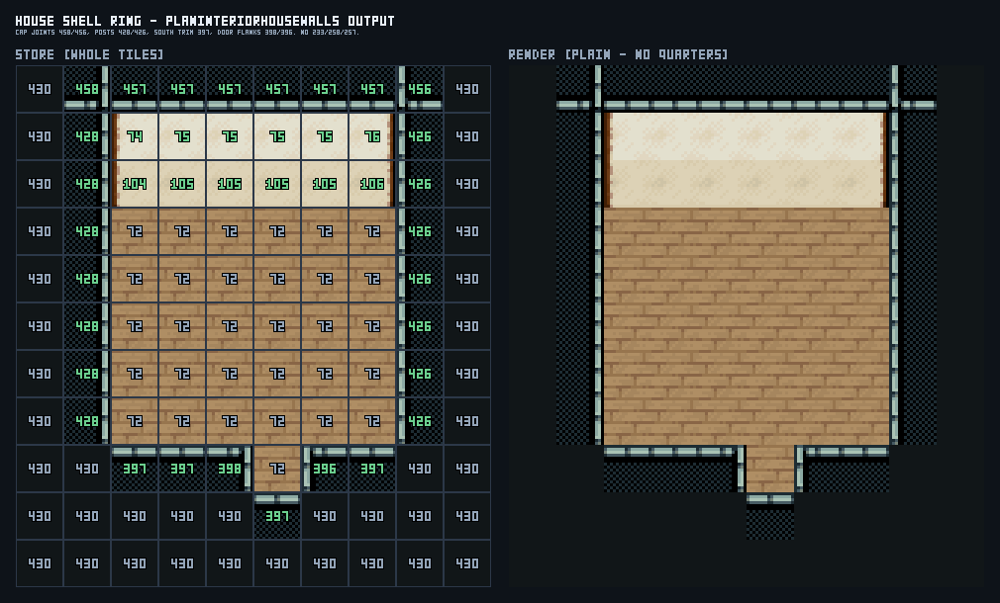
105는 plain 크림 — 오토타일 몸통이 아님
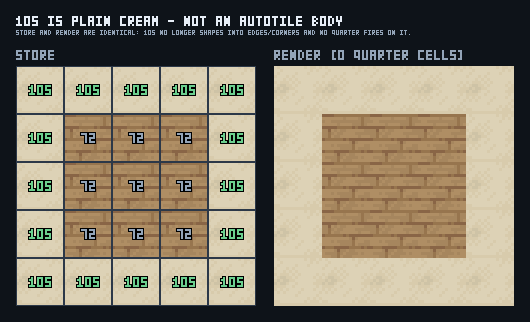
저장과 렌더가 동일합니다. 105는 더 이상 성형되지 않고, 쿼터 합성도 0셀입니다
(생성기가 이 값을 assert 합니다).
5. 방 구조 — 파티션과 내부 문
좌우 인접(gapless) — 1열 파티션 77/107 + 1칸 문
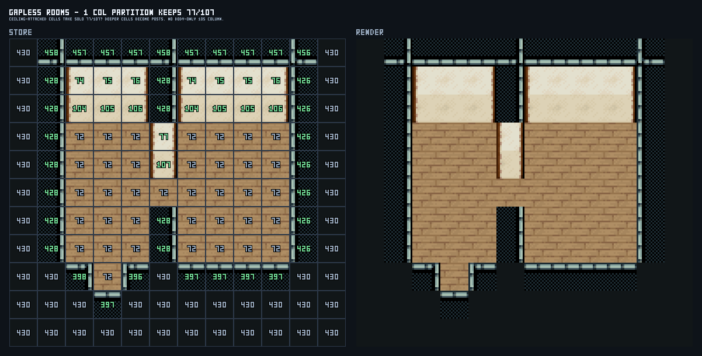
파티션 셀은 셸 계산 이전에 예약됩니다. 천장에 붙은 위 2칸이 77/107,
문 이남의 더 깊은 칸은 포스트 428입니다. walls 이후에 105를 덮는 후처리
(paintRoomPartitionWalls)는 삭제됐습니다.
상하 인접 — 3행 밴드 + 세로 3칸 복도

밴드는 캡 457 + 크림 2단으로 풀리고, 내부 문 3칸은 바닥으로 뚫린 뒤 좌우가
398/396 플랭크로 마감됩니다.
1열 — 주택 포스트(통타일) vs 다크 기둥(쿼터)
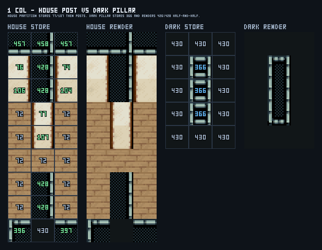
426|428 좌우 반으로 쪼개져 양쪽 선을 갖습니다.
주택 셸이 다크 쿼터 경로를 타지 않는 것은 의도입니다 — 문·포스트·공허까지 합성 대상이 되던 구 버그의 원인이었습니다.
6. 397 충돌은 어떻게 해소됐나
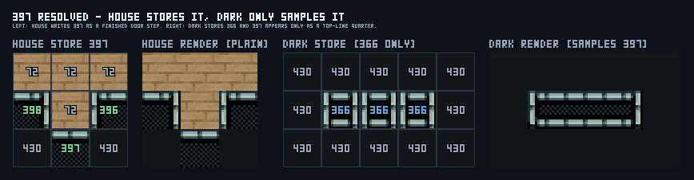
왼쪽 두 패널: 주택은 397을 완성 문턱으로 저장하고 그대로 렌더합니다(plain).
오른쪽 두 패널: 다크는 366만 저장하고, 397은 저장 grid 어디에도 없이
렌더의 위쪽 선 쿼터로만 등장합니다.
edgeS로,
쿼터 렌더가 다시 Q_EDGE_N으로 분류하던 반대 좌표계였습니다.
저장 계층에서 오토타일을 없애자 좌표계가 하나만 남았습니다.
7. 어두운 벽 — 366 저장 + 순수 쿼터 렌더
모든 grid의 저장 값은 366 하나뿐입니다. 네 쿼터는 렌더 시점에 이웃 mass로 결정됩니다.
430 공허와 주택 통타일은 mass가 아니므로 바깥으로 새지 않습니다.
1점
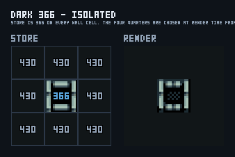
1행
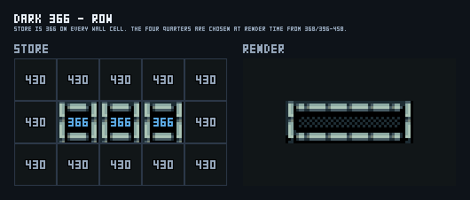
1열
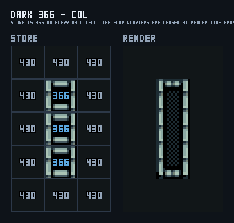
L자
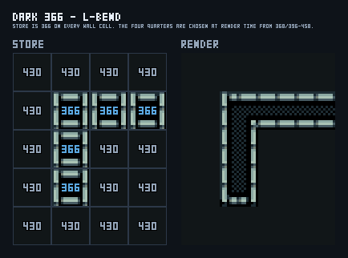
3×3 + 가운데 바닥
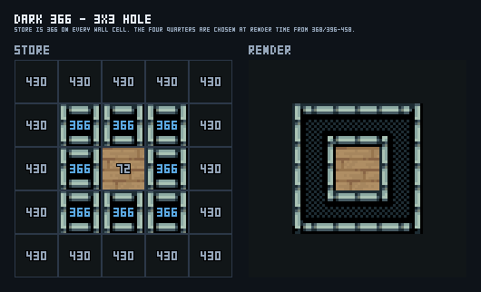
오목 코너
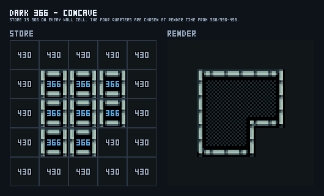
8. 리틴트 — 면만 바꾸고 프레임은 유지
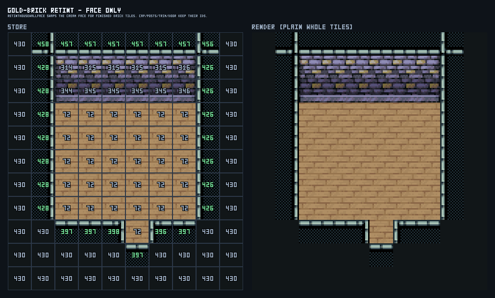
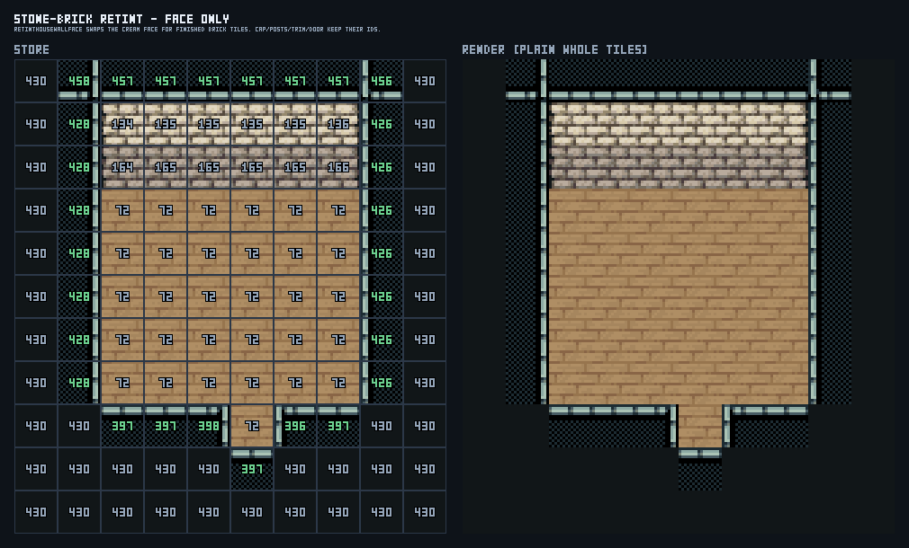
retintHouseWallFace가 크림 2단(74–76/104–106)과 1칸(77/107)만
완성 벽돌 타일로 교체합니다. 캡·포스트·트림·문 프레임 ID는 그대로이고, 오토타일도 타지 않습니다.
9. 칩셋 소유권 지도
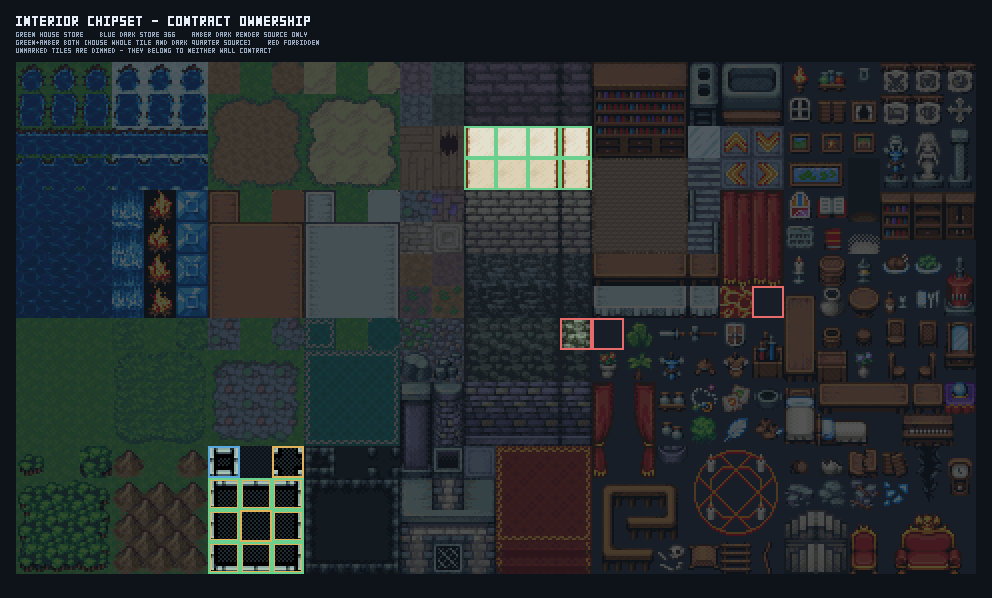
어느 계약도 소유하지 않는 타일은 어둡게 처리했습니다. 초록 = 주택 저장,
파랑 = 다크 저장 366, 앰버 = 렌더 전용 소스, 초록+앰버 = 두 역할 겸함,
빨강 = 금지. “한 ID 연속 범위 = 한 저장 문법”이 아니라는 점이 한눈에 보입니다.
10. 정본 파일과 재생성
src/project/defaults/interiorHouseWallTiles.ts—HOUSE_SHELL_TILE, 금지 목록src/editor/interiorHouseWallGrammar.ts—planInteriorHouseWalls/paintInteriorHouseWalls(주택 벽 유일 writer)src/project/defaults/darkWallAutotile.ts—366전용 저장 그룹 +DARK_WALL_QUARTER_SOURCEsrc/project/defaults/interiorDarkWallQuarter.ts— 중심이366일 때만 쿼터 합성src/project/defaults/legacyInteriorWallContract.ts— 레거시 진단(읽기 전용) + 명시적 dark→366축약openwiki/editor-workflows.md—villager-room-v1/ 쿼터 규칙
# 이 문서의 모든 PNG 재생성 (실제 API 호출) bun scripts/render-interior-wall-contract-cases.mts # 계약 테스트 npx vitest run \ test/interiorAutotile.test.ts \ test/darkWallAutotile.test.ts \ test/interiorWallFrameQuarterComposition.test.ts \ test/interiorRoomPipeline.test.ts \ test/legacyInteriorWallContract.test.ts \ test/tilesetHarness.test.ts